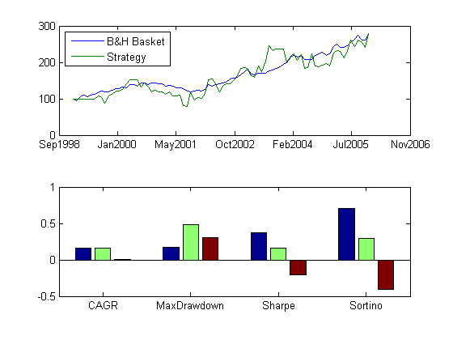
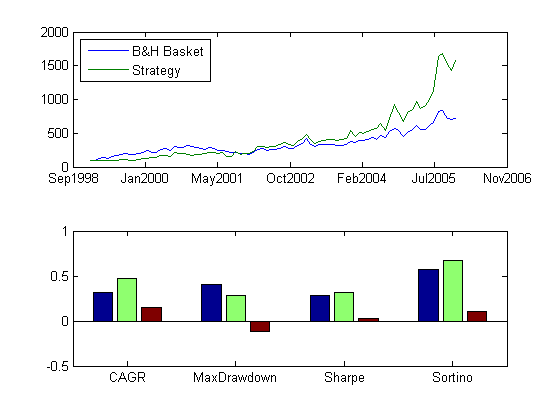

Commodities Trading with MATLAB - Cross Sectional Momentum
Another popular form of trading strategy that is often employed by commodities traders and analysts is cross-sectional momentum, which seeks to measure and rank momentum across multiple commodities.
In this script, we demonstrate a simple way to analyze and rank momentum for each commodity in our monthly training set. We have included three different momentum indicator functions that can be used to measure absolute momentum. The script implements a basic momentum catch-up strategy, in which we go rank commodities by momentum, pick the one that has the lowest momentum, wait a couple of months, and then go long that commodity, holding it for a month. This is repeated every month.
The script starts off by computing momentum signals for every commodity included in the group to be analyzed, ranks the signals, and picks the appropriate intra-period (i.e. monthly) return. It then goes on to compute a normalized index for the strategy's performance, as well as a comparative index that measures the performance of a buy-and-hold strategy that invests equal amounts of capital in each commodity in the group. Finally, the script computes the CAGR and other relevant statistics, and plots a chart displaying this information.
The final portion of the script demonstrates that, though the strategy does not perform very well on a loosely-defined group of commodities, for more focused groups the strategy manages to capture the trend if any that is driving the group's returns.
Contents
- 1. Setup
- 2. Compute momentum signal for every commodity
- 3. Compute returns & cross-sectional momentum ranking
- 4. Extract intraperiod returns (long & short), add costs
- 5. Compute buy & hold and strategy indices, other statistics
- 6. Plot indices and display CAGR, other statistics
- 7. Perform backtests on focused groups
1. Setup
Load the cleaned, aligned data that was retrieved using the Demo_A script.
clc;clear;
load('StageA');
cmd = CommodityMetadata;
2. Compute momentum signal for every commodity
In this section, we specify the data we want to analyze (monthly training data, front-month contracts) and the momentum indicator we will use to compute the momentum signal for every commodity in our set.
container = TrainingSetMonthly; container = FilterByContractNumber(container,1); indicatorFcn = @IndicatorSMASlope; windowSize = 6; symbols = fields(container); signal=[];allOpen=[];allClose=[]; % Compute indicator values for each commodity for i=1:length(symbols) currSym = container.(symbols{i}); ohlcData = currSym.Month{1}; newSignal = indicatorFcn(ohlcData,windowSize); signal = [signal newSignal]; allOpen = [allOpen ohlcData.Open]; allClose = [allClose ohlcData.Close]; dates=ohlcData.Date; end
3. Compute returns & cross-sectional momentum ranking
This section computes intra-period returns for every commodity, and ranks the momentum for each period across commodities.
intraperiodRtn=(allClose - allOpen)./allOpen; numCommodities=size(allOpen,2); howMany=1; lagMonths=2; [sortedSignal,sortedIdx]=sort(signal,2); pickedIndexValues=1:howMany; pickedIndices=createLags(sortedIdx(:,pickedIndexValues),2); for i=1:lagMonths pickedIndices(i,:)=pickedIndexValues; end
4. Extract intraperiod returns (long & short), add costs
This section extracts the returns for the "catch-up" commodity at each period, factoring in costs per round turn.
cost = 20/10000; % basis points per round turn per position rows=size(intraperiodRtn,1); cols=howMany; pickedRtns=zeros(rows,cols); % Compute returns for i=(windowSize+lagMonths):rows for j=1:cols pickedRtns(i,j)=intraperiodRtn(i,pickedIndices(i,j))-cost; end end
5. Compute buy & hold and strategy indices, other statistics
This section computes normalized indices and statistics for our momentum catch-up strategy as well as for our comparative buy-and-hold strategy.
bahRtn=mean(intraperiodRtn,2); stratRtn=mean(pickedRtns,2); [bahStats, bahIndex, labels]=ComputeStatistics(bahRtn,'m'); [stratStats, stratIndex, ~]=ComputeStatistics(stratRtn,'m'); comp = [flipud(struct2array(bahStats)') ... flipud(struct2array(stratStats)')]; comp = [comp comp(:,2)-comp(:,1)];
6. Plot indices and display CAGR, other statistics
This section generates plots for our strategy index and our buy and hold index, and also displays relevant statistics such as CAGR, Sharpe ratio, Sortino ratio, and maximum drawdown for the period. The plots compare the differences in these statistics to show how our strategy index has over-performed or under-performed compared to the buy and hold index.
figure1=figure; h=subplot(2,1,1,'Parent',figure1); plot(h,dates,bahIndex(2:end),'DisplayName','B&H Basket'); hold(h,'all'); plot(h,dates,stratIndex(2:end),'DisplayName','Strategy'); datetick('x','mmmyyyy','keepticks','keeplimits'); legend('toggle'); legend('Location','NorthWest'); hold off h=subplot(2,1,2,'Parent',figure1, ... 'XTickLabel',labels, ... 'XTick', [1:length(labels)]); box(h,'on'); hold(h,'all'); bar(comp,'Parent',h);
7. Perform backtests on focused groups
In this section, we perform similar backtests on specific commodity groups and measure performance. We notice that the performance of this strategy manages to capture major trends that moves the entire group, but is unsuccessful with certain groups such as 'soft' commodities.
container = TrainingSetMonthly;
container = FilterByContractNumber(container,1);
container = FilterByType(container,'Energy');
ComputeIndicatorsAndReturns;
PerformCrossSectionalRanking;
ComputeReturnsWithCosts;
ComputeIndicesAndPlot;
